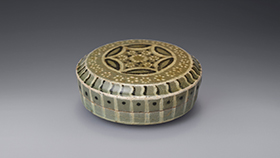
청자퇴화 국화문 합
고려, 13세기 / 점토『粘土』
전시중 - [M1, 4F]
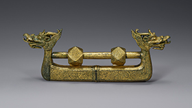
금동 용두장식 자물쇠
고려, 14세기 / 동『銅』, 도금『鍍金』
전시중 - [M1, 1F]
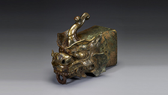
금동 용두토수
고려, 10세기 / 청동『靑銅』, 도금『鍍金』 / 보물
전시중 - [M1, 1F]
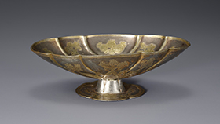
은제도금 화문 배
고려, 11-12세기 / 은『銀』, 도금『鍍金』
전시중 - [M1, 1F]
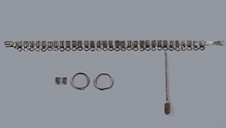
은제 과대
삼국시대 - 5-6세기 / 은『銀』
전시중 - [M1, 1F]
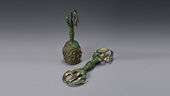
금동 금강저ㆍ청동 오고령
고려, 10-14세기 / 청동『靑銅』
전시중 - [M1, 1F]
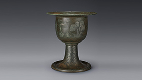
청동은입사 포류수금문 향완
고려 말 - 14세기 / 나무, 나전
전시중 - [M1, 1F]
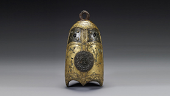
금동 풍탁
고려, 10세기 / 청동『靑銅』, 도금『鍍金』
전시중 - [M1, 1F]
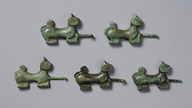
청동 호형 대구
삼한시대, 2-3세기 / 청동『靑銅』
전시중 - [M1, 1F]
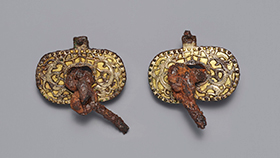
금동투조 용문 재갈
삼국시대, 5-6세기 / 철『鐵』, 도금『鍍金』
전시중 - [M1, 1F]
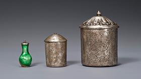
은제 사리기
고려, 11-12세기 / 은『銀』, 유리『琉璃』
전시중 - [M1, 1F]
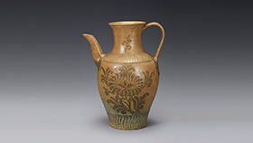
청자철화 보상화문 주자
고려, 12세기 / 점토『粘土』
전시중 - [M1, 4F]
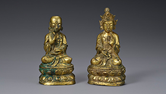
금동 관음 ㆍ 지장보살 좌상
조선, 15세기 / 동『銅』, 도금『鍍金』
전시중 - [M1, 1F]
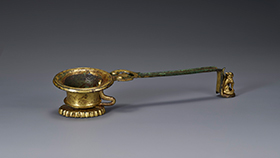
금동 손잡이향로
통일신라, 8-10세기 / 청동『靑銅』, 도금『鍍金』
전시중 - [M1, 4F]
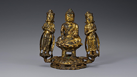
금동 여래삼존 좌상
조선, 15세기 / 동『銅』, 도금『鍍金』
전시중 - [M1, 1F]
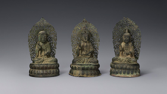
은제 아미타여래삼존 좌상
고려, 1383년 / 은『銀』, 도금『鍍金』
전시중 - [M1, 1F]